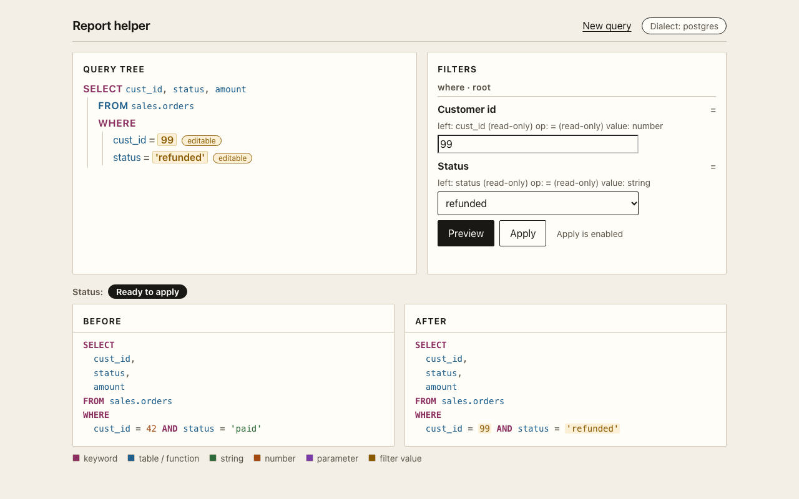
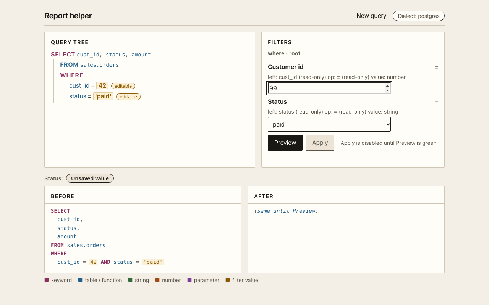
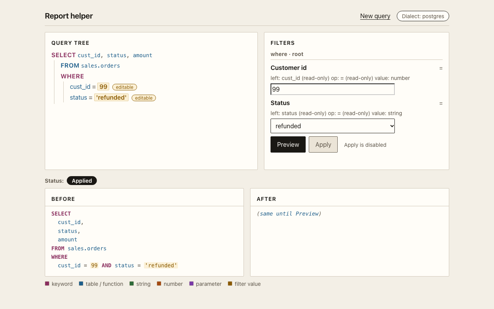
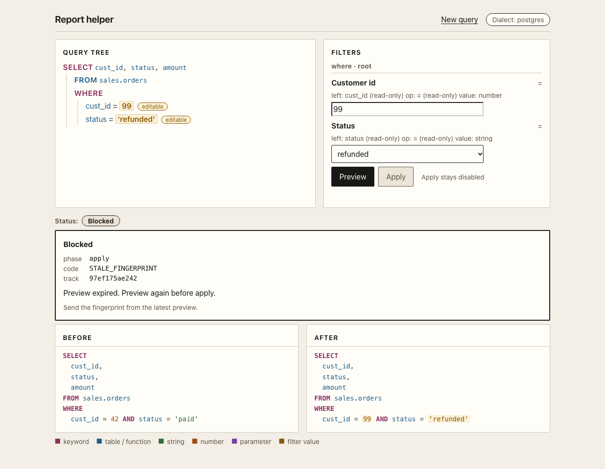
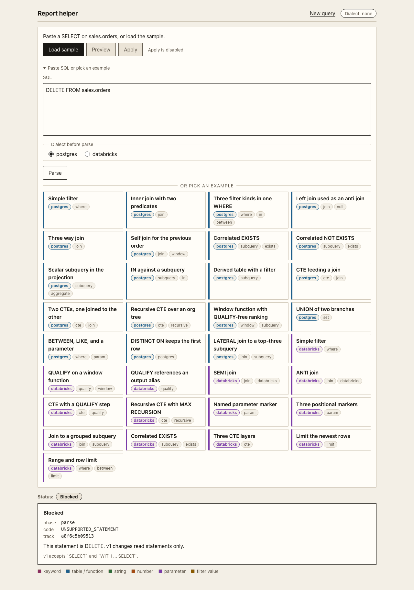

Tutorial
Six steps. Each step shows the code and the screen that the code changes. The total time is about 15 minutes.
You need Python 3.11 or later. The library uses SQLGlot 30.25.0. No database connection is necessary. The library reads and writes SQL text.
Install
Clone the repository and make a virtual environment.
git clone https://github.com/raphaelmansuy/EdgeSQL.git
cd EdgeSQL
python3 -m venv .venv
.venv/bin/pip install -e .
.venv/bin/python -c "import edgesql; print('ready')"The install adds one dependency, sqlglot==30.25.0. The
optional extra postgres adds pglast for a second
Postgres check.
Parse a statement
Name the dialect. The dialect is never guessed.
from edgesql import Query
sql = """
SELECT cust_id, status, amount
FROM sales.orders
WHERE cust_id = 42 AND status = 'paid'
"""
query = Query.parse(sql, dialect="postgres")
print(query.to_sql())Parse runs seven gates in order: known dialect, non-empty text, one
statement, a SELECT or WITH root, the dialect
rules, and column resolution. The first miss raises. You get a
Query back only when all gates pass.

Inspect before you edit
Read the tables, the CTEs, the filters, and the parameters.
print(query.tables()) # ['sales.orders']
print(query.ctes()) # []
for item in query.filters():
print(item.scope, item.clause, item.op, item.values)
# root where = (42,)
# root where = ('paid',)
for column in query.columns():
print(column.table, column.name, column.via)
# sales.orders cust_id ()
# sales.orders status ()A filter reports the physical table it reads and the hop list that reaches it. With a CTE in the path, the hop list is not empty. That is how you know a column passes through a CTE.
Rename a column with preview
A rename is a search transform. It records how many columns it matched. A rename with zero matches does not raise. It makes the preview blocked.
preview = query.preview(
lambda item: item.rename_column("cust_id", "customer_id", table="sales.orders")
)
print(preview.blocked) # False
print(preview.collapsed) # False
print(preview.fingerprint) # 16 hex characters
applied = preview.apply(actor="builder")
print(applied.to_sql())
# SELECT customer_id AS cust_id, status, amount
# FROM sales.orders
# WHERE customer_id = 42 AND status = 'paid'The output name stays cust_id because
keep_output_names defaults to true. The original
query is unchanged.

Ready to apply
and Apply is enabled.Patch a value
A value patch is Lane A. It needs a node id from the product IR and it replaces the right-hand value only.
tree = query.to_tree()
print(tree["rootId"]) # n_select
print(tree["nodes"]["n_cmp_cust_eq"]["right"]) # {'value': 42}
patched = query.set_params([
{"op": "set_comparison", "nodeId": "n_cmp_cust_eq", "params": {"value": 99}},
])
print(query.preview(lambda _item: patched).apply(actor="reader").to_sql())
# ... WHERE cust_id = 99 AND status = 'paid'The same lane covers ranges, lists, and limits.
from edgesql import Query
query = Query.parse(
"SELECT id FROM sales.orders WHERE amount BETWEEN 10 AND 20 AND region IN ('EU', 'US') LIMIT 5",
dialect="postgres",
)
nodes = query.to_tree()["nodes"]
ids = {node["kind"]: key for key, node in nodes.items() if node["editable"]}
query = query.set_params([{"op": "set_between", "nodeId": ids["Between"], "params": {"low": 30, "high": 90}}])
query = query.set_params([{"op": "set_in_list", "nodeId": ids["InList"], "params": {"values": ["APAC", "LATAM"]}}])
query = query.set_params([{"op": "set_limit", "nodeId": ids["Limit"], "params": {"value": 42}}])
print(query.to_sql())A patch that sends left, op, column,
or children raises STRUCTURE_PATCH. A patch on a
read-only node raises the same code.
Drive the screen
The example app builds its controls from the IR. Start it and open the page.
make dev
# Report helper: http://127.0.0.1:8765Choose Paste SQL or pick an example, then pick an example. The filter panel fills itself. Change a value, then press Enter or use Preview. Apply stays disabled until a clean preview exists.


The screen never sends a full tree. It sends one patch per changed
control, with the draft fingerprint in If-Match. A stale
fingerprint returns 409 and the screen shows the error.

Handle an error
Every error is a SqlCraftError with a phase, a code, and a
hint. Print display() for one line.
from edgesql import Query, SqlCraftError
try:
Query.parse("DELETE FROM sales.orders", dialect="postgres")
except SqlCraftError as error:
print(error.display())
# [parse/UNSUPPORTED_STATEMENT] This statement is DELETE. v1 changes read
# statements only. Hint: v1 accepts `SELECT` and `WITH ... SELECT`.
print(error.track_id) # 12 lowercase hex characters
Done
You can now parse, inspect, rename, patch, preview, apply, and handle an error. The examples page has 33 statements that cover the hard shapes. The reference lists every method and every code.

Raphael Mansuy
Raphael builds data platforms and developer tools. He works on SQL engines, data pipelines, and the small libraries that make those systems easier to operate. He writes about SQL, data engineering, and practical software design.
EdgeSQL started from one observation: changing SQL with string replacement breaks as soon as two edits touch the same name. A typed tree with a preview gate is the smallest honest fix, so he built it and tested it against the official Postgres and Databricks statements.
Building something with SQL? Tell Raphael about it.
Connect on LinkedIn